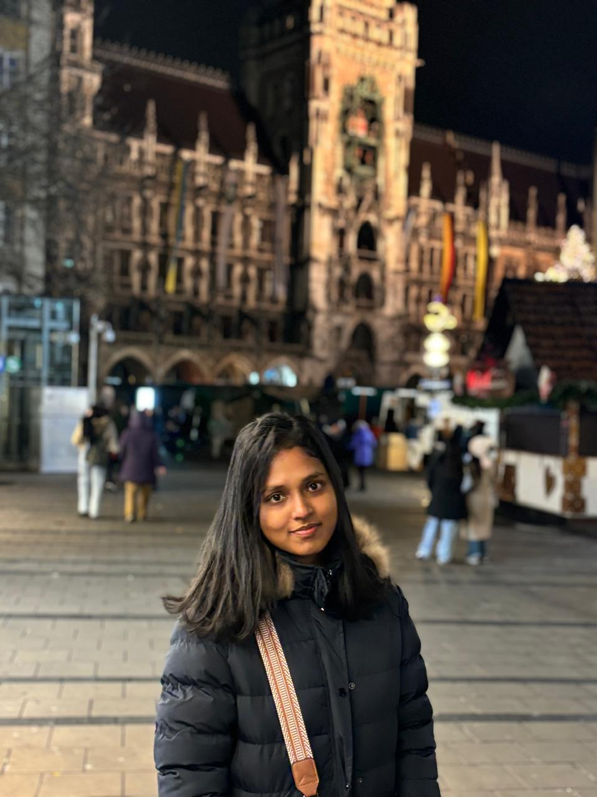

I am Hasara, from Sri Lanka. Currently in my second semester of studies and working as a part-time backend developer in a working student position. Prior to moving to Germany, I worked as a Software Engineer - Backend Developer in Sri Lanka for two years.
My main contributions to this project are focused on backend architecture, backend API development and deployments in cloud.